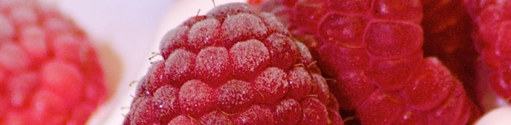

About Us

Why We're the Best
At The Healthy Yogurt Twist, we pride ourselves on offering the highest quality frozen yogurt. We use only the freshest, locally sourced ingredients to ensure that each bite is bursting with flavor and nutrition. Our innovative flavors and commitment to health make us stand out from the rest.
Our Mission
Our mission is to provide delicious, nutritious frozen yogurt that delights the taste buds and nourishes the body. We strive to create a welcoming environment where our community can enjoy a healthy treat together.
Our Vision
We envision a world where healthy eating is not only accessible but also enjoyable. We aim to be the leading provider of healthy frozen yogurt, known for our quality, innovation, and commitment to our customers' well-being.